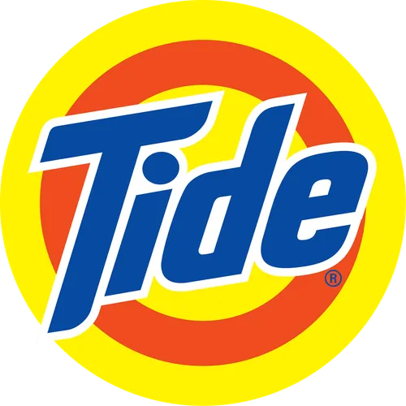
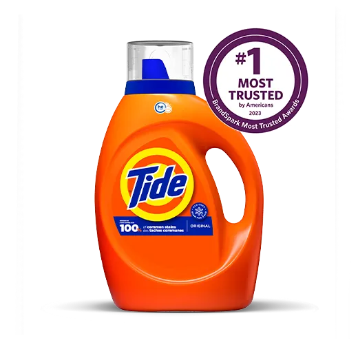
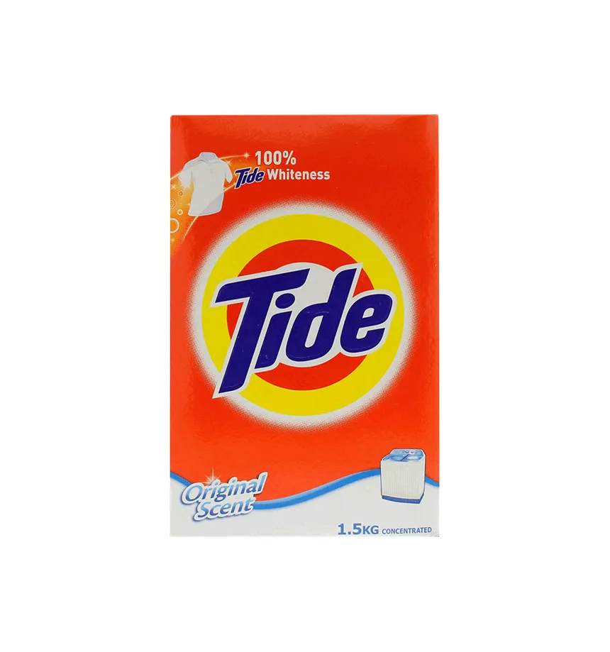
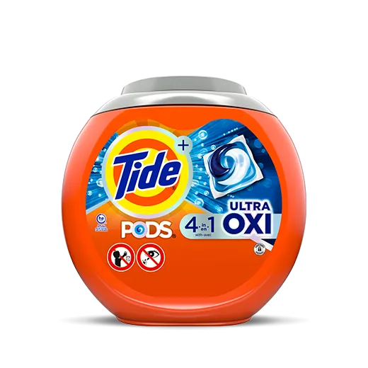
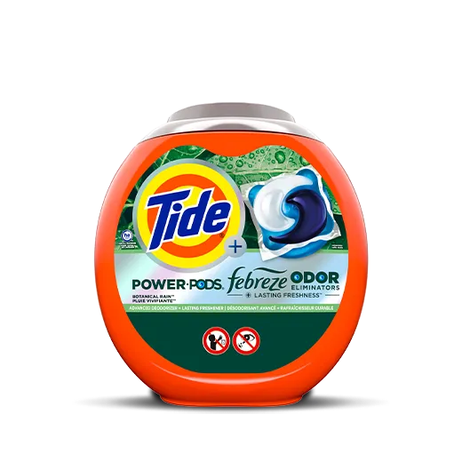
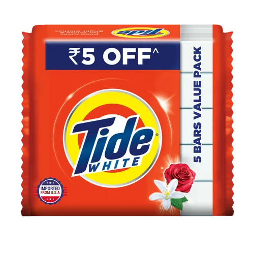
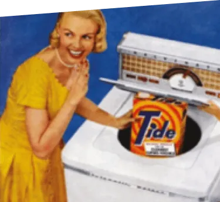
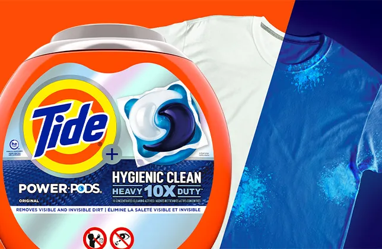

CONTRIBUTORS
Pasia, Paul John
Coder
Pasion, Sean Jaden
Paragraph Contributor
Pista, Christian Josh
Paragraph Contributor
Razonable, Isaiah
Paragraph Contributor
Revillosa, Abdul
Paragraph Contributor
✆ Contact Number
09158832678
✉ Email Address
tideempowermentgroup@gmail.com


